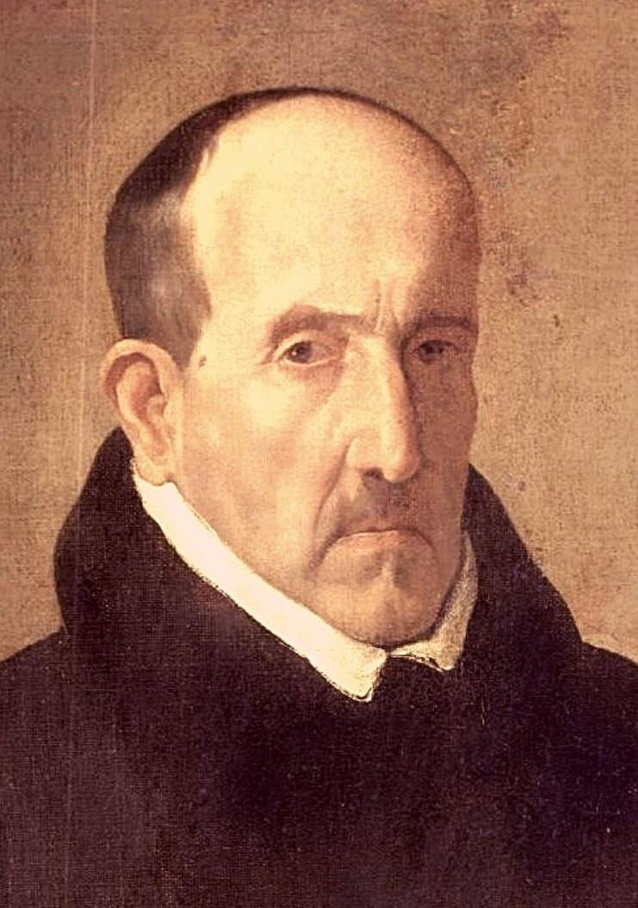

Lope de Vega

Felix Lope de Vega y Carpio(Madrid, 25 de noviembre de 1562-Madrid, 27 de agosto de 1635)fue uno de lo más importantes poetas y dramaturgos del Siglo de Oro español y, por la extensión de su obra, uno de los más prolíficos autores de la literatura universal.
Luis de Góngora
Luis de Góngora y Argote(Córdoba, 11 de julio de 1561- Córdoba, 23 de mayo de 1627) Fue un poeta y dramaturgo del Silgo de Oro, máximo exponente de la corriente literaria conocida como culteranismo o gongorismo.